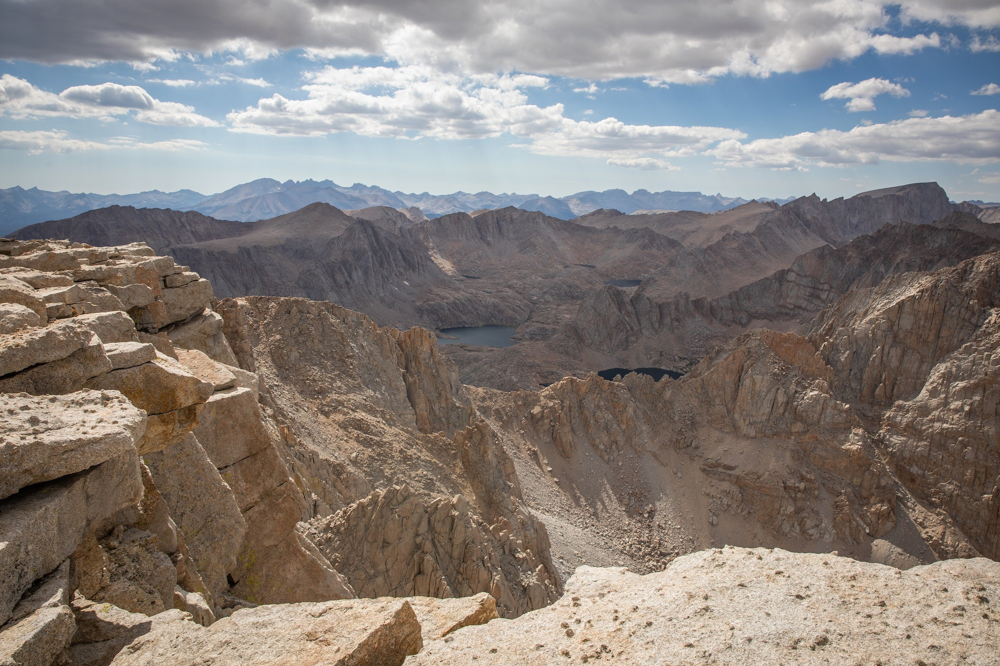
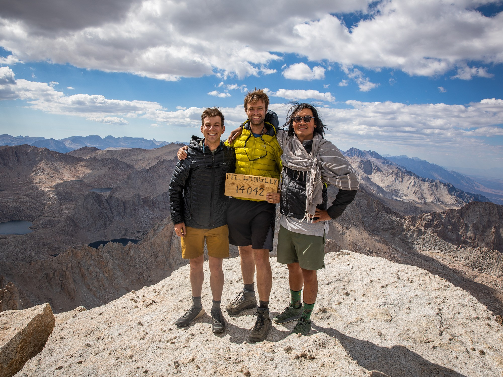
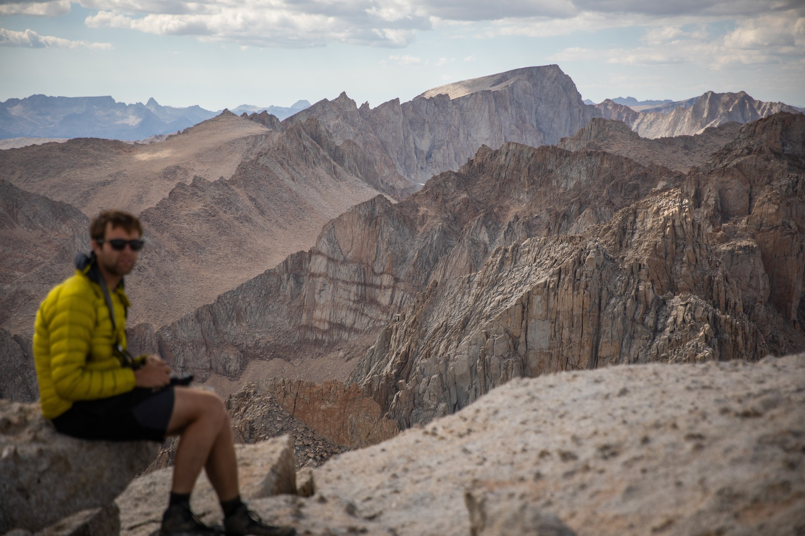
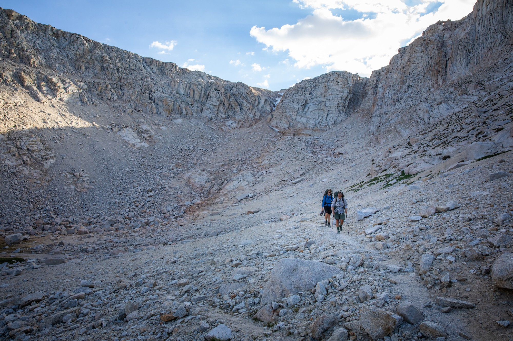
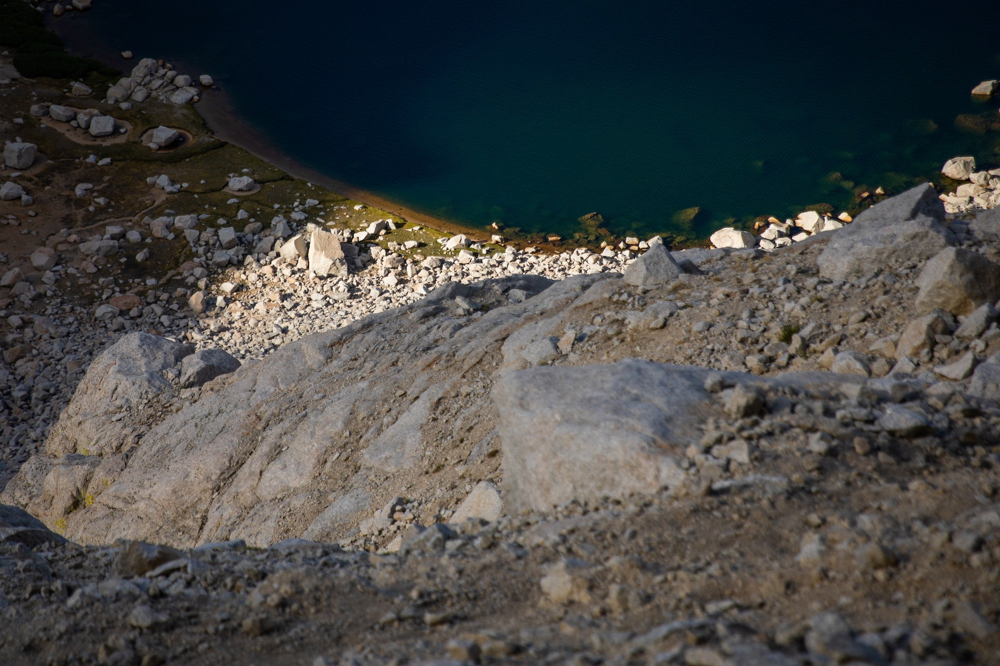
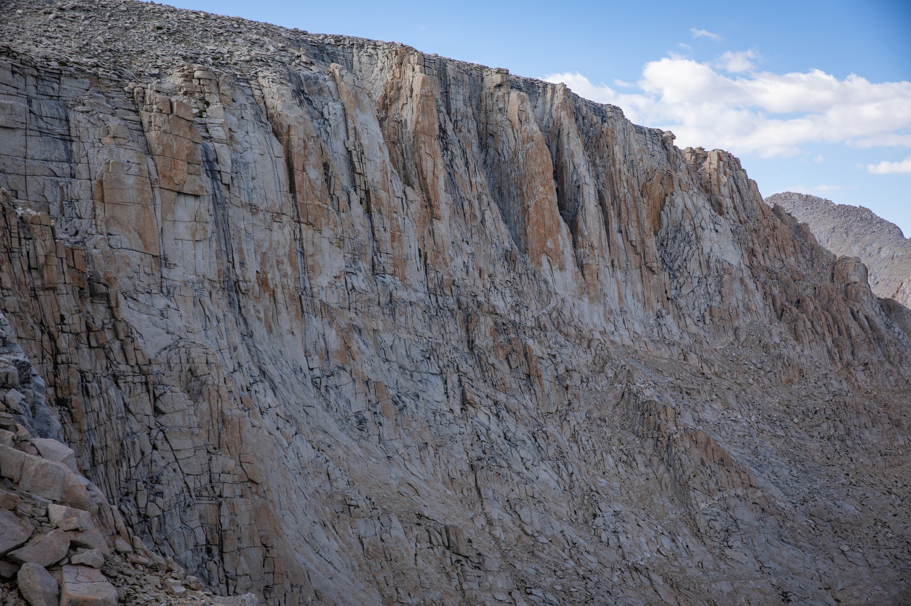
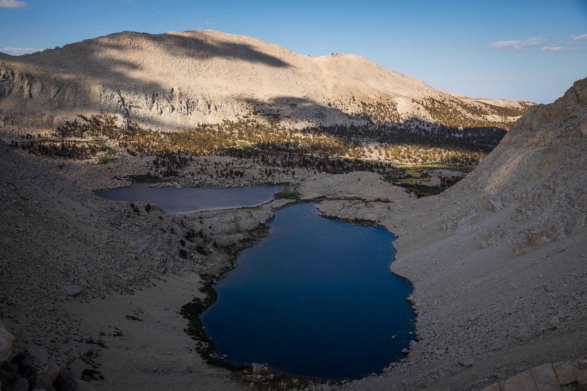
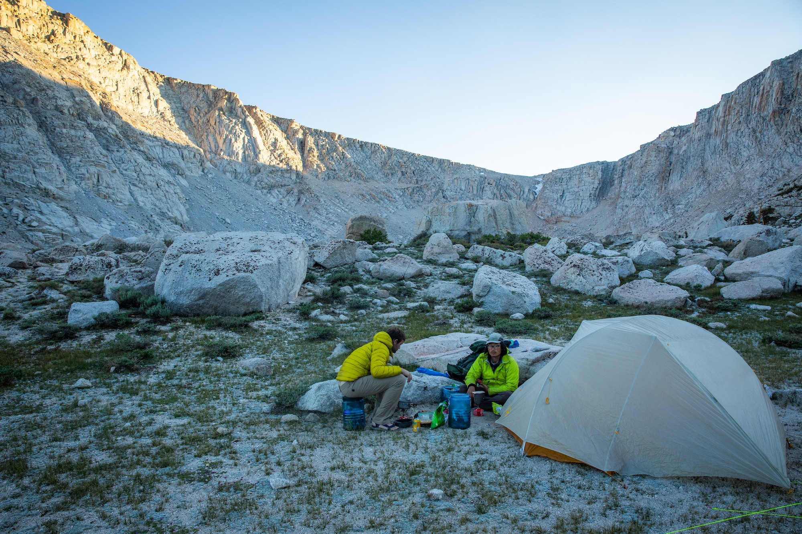
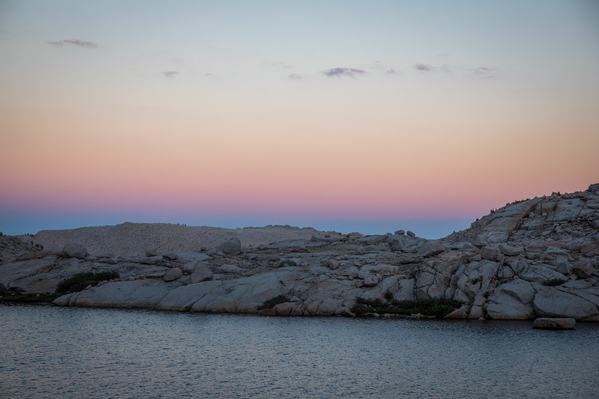
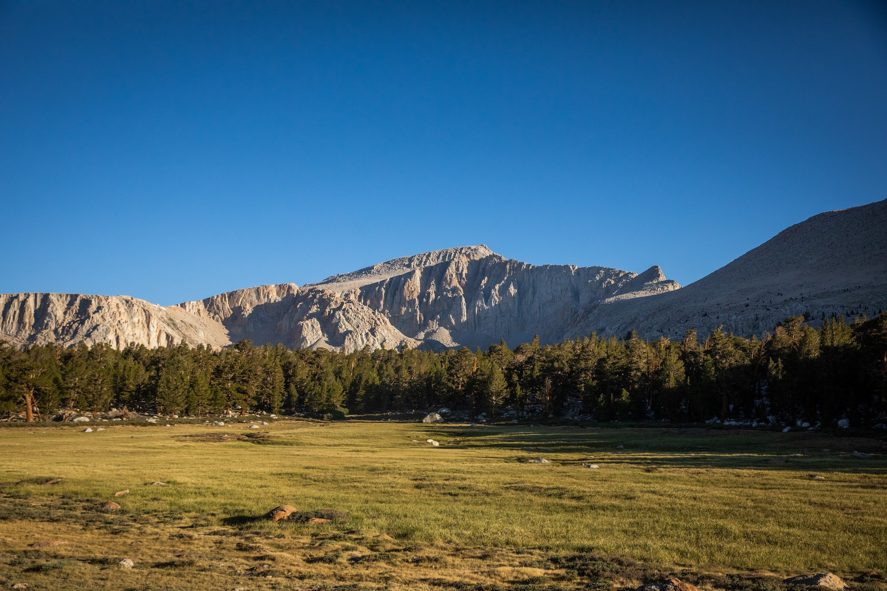

The Miter Basin
Backcountry fly fishing and scrambling in the Southern Sierra high country
For the past few years, my friends and I have treated the Independence Day holiday weekend as an empty canvas for planning backcountry escapes. Last year, Ben Banet treated us to an epic high Sierra jaunt from Independence Pass to Onion Valley along the JMT. This year, however, Ben was working in Yellowstone and wasn't able to join in the yearly tradition. He did, however, point Josh Shiau, Alex Hadik and I to a new objective deep in the heart of the range: the Miter Basin.
To reach this gnarly high altitude region, we made a plan to enter the Golden Trout Wilderness from the Horseshoe Meadows trailhead and work our way into Sequoia National Park via New Army Pass.
During this period of my life, I had been living in my friends Madi and Christoph's guest bedroom in San Diego. It was my twin brother Morgan's last year of ER residency and I had temporarily put down some roots there to spend some time with him and focus on learning to surf together. He wasn't able to get time off for the trip, but I was able to easily convince Alex and Josh to join for a few days of high Sierra backpacking.
I picked them up in Pacific Beach and a few hours later, we had made it to the Olancha Cafe just in the nick of time before they closed. The sun had gone behind the peaks and the heat of the day started to dissipate as we ate our burgers. While looking up at Olancha Peak and its massive neighbors, we talked about the route and stoked each other up; we were all really excited to see new country.
We arrived at Horseshoe Meadows around 10pm and found a spot to cowboy camp without too much trouble.

The sun came up on horseshoe meadow and soon we had the stove going for eggs and coffee. As breakfast cooked, we divided our food and group gear into bear canisters and hit the trail around 11. A short distance from the trailhead, we came across the livery stables and made some new friends with the horses and mules.
The sun came up on horseshoe meadow and soon we had the stove going for eggs and coffee. As breakfast cooked, we divided our food and group gear into bear canisters and hit the trail around 11.

From the corral, it was a beautiful, short hike through ponderosa pines and sandy crushed granite to south fork lake. We continued on to our campsite less than a mile away at Cirque Lake, which felt remote and gorgeous. Since we had come directly from sea level, we were pretty wiped from the altitude but after setting up camp and a quick reading / napping break, we were good to go.


After rigging up our tenkaras, we spent the afternoon stalking around the lake and trying to sneak up on golden trout. All of us got some exciting bites, but as novice fishermen, we realized they were really good at spitting out our flies. We hoped that as we got further from the trailheads we would come across trout that were much more receptive to our amateur casting and presentation.
After trying in vain for a few hours, we returned to South Fork Lake, where Alex and I both caught a few goldens in the inlet creek. This was my first time handling this incredible and rare species. Golden Trout are California's state freshwater fish, and are found only in this small region of the Southern Sierra. Even though they were tiny, the bright red streak and their fighting spirit was super cool.


After releasing our fish and returning to camp, the three of us smoked a jimmy and watched the sunset from a ridge above the lake. From this point, we could see New Army Pass, Cirque Peak and even Mt. Langley itself, which we hoped to summit on our second to last day. Sleep came easy in the surprisingly warm evening air.


Alex was the first to rise and already had the stoves roaring when I rolled out of my tent at Cirque Lake. It took us much less time to get moving today and the hike across the meadows near Cottonwood Lakes #1 and #2 was gorgeous.

Soon, we started gaining elevation and began to make our way up the escarpment. I filtered water at High Lake but wish I could have spent quite a bit of time there since the views were so dramatic. By 10:30 AM, we were on top of new army pass and had a quick snack break.


Since we didn't have very far to go, we took a pit stop at Soldier Lake. It was not even a mile off our route and was worth the detour for the commanding view of the Major General. The bottom of the lake was soft and the water warm, so we all hopped in. While our clothes dried, I went fishing near the outlet without a shirt which of course was dumb. For the rest of the trip, my shoulder blades were sunburned because of this stupid mistake, but the opportunity to stalk Goldens in a pristine wilderness was a good trade.


Packs on again. We made our way down rock creek trail to Upper Rock Creek Lake which afforded more great views of the Tuttle pass area, Mt. LeConte and Mt. Corcoran. After a few days walking through new country, reaching familiar territory at the junction of the PCT with Rock Creek was satisfying. It's always exciting to piece together my own personal mental map, especially in the high Sierra.

We made camp in a beautiful meadow with a friendly deer near the ranger station. Although we caught six fish, we released all of them. Our evening's meal of Spanish rice packets was made more exciting by Josh's addition of tex-mex spicy trail mix. "Latin cuisine is all about the unexpected" he told us while giggling.

Another early morning. We woke up to a bit of condensation next to rock creek, but not enough to slow us down. I had remembered Guyot pass as being hot and long when I hiked the PCT in 2018. But we were thankfully blessed with a little breeze and some cloud cover, which made the morning much more pleasant.
After crossing Guyot Pass, we started descending on the PCT into Guyot flat. The miles were easy and sandy. As we trended downhill, we started to see and smell lots of huge Sierra Juniper trees all around, which is one of my favorite species in the Southern Sierra. Just before dropping down into the Crabtree Meadows, we got our first big view of the Whitney Zone.

We did some fishing in Crabtree meadows where we ran across a man and the cutest chocolate lab who had the same idea. After a quick break, we continued on our way towards Guitar Lake. Deep in conversation, we missed the junction with the Cottonwood Lakes trail because the turnoff was so hidden. We ended up near the ranger station before we knew we had to turn around. The benefit was that those of us who needed an emergency bathroom break were able to take advantage of the pit toilets.
The trail to Crabtree lakes wasn't really developed, which is why we missed the turnoff. Although beautiful, it was immediately clear that our day's hike was about to get much less popular as the trail faded into a steep use path.

As the clouds rolled in, we got to a first granite bench with a series of alpine lakes. The lower of these was nestled immediately below an arresting and epic wall of granite straight. Although it was mostly cloudy and the temperatures were dropping, I swam during a tiny window of sunlight we got but scraped my feet to hell on the sharp rocks.


The middle cottonwood lake (11,633) was even more epic, completely above tree line. We skirted above the Northside of the lake and made good time on the sticky granite. Once we turned up Crabtree creek, we got incredible views of the Whitney pass area, including what I believe was Mt. McAadie and Mt. Marsh. The views were stunning and filled with unbelievably sharp end epic spires that reminded us all of Patagonia. We were definitely ready to get to camp by now, but the vistas were too inspiring to not want to keep going.


Our final approach to camp featured stunning wildflowers and massive views of a ridge containing Mt. Chamberlain and Mt. Newcomb. When we got to our campsite at the upper Crabtree Lake (12,119), I immediately set up my fly rod. Unfortunately, Josh immediately stepped on it and snapped the tip. Little did I know next summer that I would snap his fly rod on our packrafting trip on the South Fork of the Flathead in the Bob Marshall Wilderness. This is an unfortunate and expensive little backpacking tradition we've developed.

We set up our dining room in a perfect little slot between a few granite boulders. As we ate our dinner, we watched the incredible light show on the peaks above and valley below. The Whitney pass, trail crest and discovery beckoned, but we mostly focused on trying to see the trace of Cottonwood Pass.


Today's cross-country section without a doubt made it the hardest day of the trip so far. We started early and spoke with some other hikers on the other side of the lake about Crabtree pass. They gave us some beta and told us that we were in for a hell of a route finding time all day. And boy were they right.

The early morning light was stunning on the way up the second class section to the top of Crabtree pass. From here, we could finally look down into the Miter Basin. It was a bit of a route-finding slog as we worked our way through several unnamed lakes, glacial tarns and rocky scrambles. We took our first break of the day at Sky Blue Lake before the going got even harder.


At this point, the trail we had found on Gaia was non-existent. Instead of dropping all the way back down to Soldier Lake, we decided to do a class II traverse to cut off a little bit of elevation loss. This turned out to be potentially more exhausting than just backtracking. But we were stubborn and this made for an exciting route finding adventure.


Once we got to Upper Solider Lake to eat lunch and assess the rest of the day, I think we all hit a low place. My morale was at an all time low, anyway. I stared up at the Major General towering above and realized that even though it looked impossibly high, its summit was at least 1,500 ft below our goal for the day: Mt. Langley. I dreaded the hot, middle of the day climb up to the saddle junction.

Even though I was worried about it, the actual experience of climbing up to the junction wasn't so bad. The climb up to the Langley trail was relatively gradual and beautiful. From here, we bounded up to the summit and were rewarded with some of the most stunning Sierra views I've ever seen. Absolutely worth it!


The sheer volume of free space from the from the diving board-like granite rocks of Langley's summit to the Tuttle Creek drainage below was unlike anything I had ever seen. At the time, I thought this was the only time I would ever be standing on this mountain, but less than 2 years later, Alex and I would return to this very drainage when we skied the NE Couloir of Mt. Langley.


After celebrating at the summit, we started back down the trail. This time, we took Old Army pass to drop back into the Cottonwood Lakes basin.


After we setup our camp in the little spit of land between Cottonwood Lakes #4 and #5, I fished unsuccessfully using Josh's rod for a while, but was completely gassed. It's hard to believe that we had travelled through such varied terrain in a single day. Everyone was totally exhausted and over dinner we agreed that it had been the hardest 13 miles of hiking we'd ever done.



Even though we were feeling grateful for 5 days spent in the high Sierra, all of us were excited to get back to the trailhead. We had a long drive back to San Diego, after all. We followed the gentle downhill grade of the Cottonwood Lakes trail out of the wilderness until we started paralleling the Golden Trout Camp Trail. Because I had decided to hold my bathroom stop until we got back, the final hours of the hike felt like an eternity. When we passed the corral and stables a second time, I think I saw a look of recognition in one mule's eyes.







